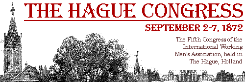

The International Working Men's Association, 1872
Written: in French by Engels at the end of August 1872.
Submitted to the Commission Investigating the Alliance;
Source: The General Council of the First International. 1871-72, Moscow, 1968;
Transcribed: by director@marx.org.
The Alliance of Socialist Democracy was founded by M. Bakunin towards the end of 1868. It was an international society claiming to function, at the same time, both within and without the International Working Men's Association. Composed of members of the Association, who demanded the right to take part in all meetings of the International's members, this society, nevertheless, wished to retain the right to organise its own local groups, national federations and congresses alongside and in addition to the Congresses of the International. Thus, right from the onset, the Alliance claimed to form a kind of aristocracy within our Association, or elite with its own programme and possessing special privileges.
The letters which were exchanged between the Central Committee of the Alliance and our General Council at that time are reproduced on pp. 7-9 of the circular Fictitious Splits in the International" "(appendix No. 1). The General Council refused to admit the Alliance as long as it retained its distinct international character; it promised to admit the Alliance only on the condition that the latter would dissolve its special international organisation, that its sections would become ordinary sections of our Association, and that the Council should be informed of the sear and numerical strength of each new section formed.
The following is the reply dated June 22, 1869, to these demands received from the Central Committee of the Alliance, which has henceforth become known as the "Geneva Section of the Alliance of Socialist Democracy" in its relations with the General Council.
"As agreed between your Council and the Central Committee of the Alliance of Socialist Democracy, we have consulted the various groups of the Alliance on the question of its dissolution as an organisation outside the International Working Men's Association.... We are pleased to inform you that a great majority of the groups share the views of the Central Committee which intends to announce the dissolution of the International Alliance of Socialist Democracy. The question of dissolution has today been decided. In communicating this decision to the various groups of the Alliance, we have invited them to follow our example and constitute themselves into sections of the International Working Men's Association, and seek recognition as such either from you or from the Federal Councils of the Association in their respective countries. Confirming receipt of your letter addressed to the former Central Committee of the Alliance, we are sending today for your perusal the rules of our section, and hereby request your official recognition of it as a section of the International Working Men's Association...." (Signed) Acting Secretary, C. Perron (appendix No. 2).
A copy of these rules of the Alliance may be found among appendices No. 3.
The Geneva section proved to be the only one to request admission to the International. Nothing was heard about other allegedly existing sections of the Alliance. Nevertheless, in spite of the constant intrigues of the Alliancists who sought to impose their special programme on the entire International and gain control of our Association, one was bound to accept that the Alliance had kept its word and disbanded itself. The General Council, however, has received fairly clear indications which forced it to conclude that the Alliance was not even contemplating dissolution and that, in spite of its solemn undertaking, it existed and was continuing to function as a secret society, using this underground organisation to realise its original aim -- the securing of complete control. Its existence, particularly in Spain, became increasingly apparent as a result of discord within the Alliance itself, an account of which is given below. For the moment, suffice it to say that a circular drawn up by members of the old Spanish Federal Council, who were at the same time members of the Central Committee of the Alliance in Spain (see Emancipacion No. 61, p. 3, column 2, appendix No. 4), exposed the existence of the Alliance. [Earlier] the circular, dated June 2, 1872 and published in Emancipacion (No. 59, appendix No. 5), informed all the sections of the Alliance in Spain that the signatories had dissolved themselves as a section of the Alliance and invited other sections to follow their example.
The publication of this circular caused the Alliance newspaper, the Barcelona Federacion (No. 155, August 4, 1872), to publish the rules of the Alliance (appendix No. 6), thus putting the existence of this society beyond question.
A comparison of the rules of the secret society with the rules presented by the Geneva section of the Alliance to the General Council shows, firstly, that the introductory programme to the first document is identical to that of the second. There are merely a few changes in wording, as a result of which Bakunin's special programme is given more succinct expression in the secret rules.
Below is an exact table of:
Geneva rules | Secret rules | |
Art. 1 | corresponds literally to | Art. 5 |
Art. 2 | corresponds generally to | Art. 1 |
Art. 3 | corresponds literally to | Art. 2 |
Arts. 4 & 5 | correspond generally to | Art. 3 |
Art. 6 | corresponds generally to | Art. 4 |
The secret rules themselves are based on the Geneva rules. Thus, Article 4 of the secret rules corresponds literally to Article 3 of the Geneva rules; Articles 8 and 9 in the Geneva rules correspond in abbreviated form to Article 10 of the secret rules, as do the Geneva Articles 15-20 to Article 3 of the secret rules.
Contrary to the actual practice of the Alliancists, the Geneva Article 7 advocates the "strong organisation" of the International and binds all members of the Alliance to "uphold ... the decisions of the Congresses and the authority of the General Council". This article is not to be found in the secret rules, but evidence of its original inclusion in these rules is provided by the fact that it is reproduced almost word for word in Article 15 of the regulations of the Madrid sección de oficios varios [section combining various types of professions] (appendix No. 7) which also includes the programme of the Alliance.
It is, therefore, clear that we are dealing with one and the same society and not with two separate societies. At the same time as the Geneva Central Committee was assuring the General Council that the Alliance had been disbanded, and was admitted as a section of the International on the basis of this assurance, the ringleaders of this Central Committee led by Mr. Bakunin were strengthening the organisation of this same Alliance, turning it into a secret society and preserving that very international character which they had undertaken to abolish. The good faith of the General Council and of the whole International, to whom the correspondence had been submitted, was betrayed in a most disgraceful manner. Having once committed such a deception, these men were no longer held back by any scruples from their machinations to subordinate the International, or, if this were unsuccessful, to disorganise it.
Below we quote the main articles of the secret rules:
"1) The Alliance of Socialist Democracy shall consist of members of the International Working Men's Association and has as its aim the propaganda and development of the principles of its programme, and the study of all means suited to advance direct and immediate emancipation of the working class.
"2) In order to achieve the best possible results and not to compromise the development of social organisation, the Alliance shall be entirely secret.
"4) No person shall be admitted to membership if he has not accepted beforehand the principles of the programme completely and sincerely.
"5) The Alliance shall do its utmost to exert from within its influence on the local workers' federation in order to prevent the latter from embarking on a reactionary or anti-revolutionary course.
"9) Any member may be dismissed from membership of the Alliance on a majority decision without any reason being given."
Thus, the Alliance is a secret society formed within the International itself, having a programme of its own differing widely from that of the International, a society which has as its aim the propaganda of that programme which it considers to be the only true revolutionary one. The society binds its members to act in such a way inside the local federation of the International as to prevent it from embarking on a reactionary or anti-revolutionary course, i.e., the slightest deviation from the programme of the Alliance. In other words, the aim of the Alliance is to impose its sectarian programme on the whole International by means of its secret organisation. This can be, most effectively achieved by taking over the local and Federal Councils and the General Council, using the power of a secret organisation to elect members of the Alliance to these bodies. This was precisely what the Alliance did in cases where it felt that it had a good chance of success, as we shall see below.
Clearly no one would wish to hold it against the Alliancists for propagating their own programme. The International is composed of socialists of the most various shades of opinion. Its programme is sufficiently broad to accommodate all of them: the Bakunin sect was admitted on the same conditions as all the others. The charge levelled against it is precisely its violation of these conditions.
The secret nature of the Alliance, however, is an entirely different matter. The International cannot ignore the fact that in many countries, Poland, France and Ireland among them, secret organisations are a legitimate means of defence against government persecution. However, at its London Conference the International stated that it wished to remain completely dissociated from these societies and would not, consequently, recognise them as sections. Moreover, and this is the crucial point, we are dealing here with a secret society created for the purpose of combatting not a government, but the International itself.
The organisation of a secret society of this kind is a blatant violation, not only of the contractual obligations to the International, but also of the letter and spirit of our General Rules. Our Rules know only one kind of members of the International with equal rights and duties for all. The Alliance separates them into two castes: the initiated and the uninitiated, the aristocracy and the plebe, the latter destined to be led by the first by means of an organisation whose very existence-is unknown to them. The International demands of its members that they should acknowledge Truth, Justice and Morality as the basis of their conduct; the Alliance imposes upon its adepts, as their first duty, mendacity, dissimulation and imposture, by ordering them to deceive the uninitiated members of the International as to the existence of the secret organisation and to the motives and aims of their words and actions. The founders of the Alliance knew only too well that the vast majority of uninitiated members of the International would never consciously submit to such an organisation were they aware of its existence. This is why they made it "completely secret". For it is essential to emphasise that the secret nature of this Alliance is not aimed at eluding government vigilance, otherwise it would not have begun its existence as a public society; this secret nature had as its sole aim the deception of the uninitiated members of the International, proof of which is the base way in which the Alliance deceived the General Council. Thus we are dealing with a genuine conspiracy against the International. For the first time in the history of the working-class struggle, we stumble upon a secret conspiracy plotted in the midst of the working class, and intended to undermine, not the existing exploiting regime, but the very Association in which that regime finds its fiercest opponent.
Moreover, it would be ludicrous to assert that a society has made itself secret in order to protect itself from the persecution of existing governments, when that same society is everywhere advocating the emasculating doctrine of complete abstention from political action and states in its programme (Article 3, preamble to the secret rules) that it
"rejects any revolutionary action which does not have as its immediate and direct aim the triumph of the workers' cause over capital".
How then has this secret society acted within the International?
The reply to this question is already given in part in the private circular of the General Council entitled "Fictitious Splits, etc.". But due to the fact that the General Council was not yet at that time aware of the actual size of the secret organisation, and in view of the many important events which have taken place subsequently, this reply can be regarded only as most incomplete.
Let it be said right from the start the activities of the Alliance fall into two distinct phases. The first is characterised by the assumption that it would be successful in gaining control of the General Council and thereby securing supreme direction of our Association. It was at this stage that the Alliance urged its adherents to uphold the "strong organisation" of the International and, above all,
"the authority of the General Council and of the Federal Councils and Central Committees";
and it was at this stage that gentlemen of the Alliance demanded at the Basle Congress that the General Council be invested with those wide powers which they later rejected with such horror as being authoritarian.
The Basle Congress destroyed, for the time being at least, the hopes nourished by the Alliance. Since that time it has carried on the intrigues referred to in the "Fictitious Splits"; in the Jura district of Switzerland, in Italy and in Spain it has not ceased to push forward its special programme in place of that of the International. The London Conference put an end to this misunderstanding with its resolutions on working-class policy and sectarian sections. The Alliance immediately went into action again. The Jura Federation, the stronghold of the Alliance in Switzerland, issued its Sonvillier circular against the General Council, in which the strong organisation, the authority of the General Council and the Basle resolutions, both proposed and voted for by the very people who were signatories to the circular, were denounced as authoritarian -- a definition that, apparently, sufficed to condemn them out of hand; in which mention was made of "war, the open war that has broken out in our ranks"; in which it was demanded that the International should assume the form of an organisation adapted, not to the struggle in hand, but to some vague ideal of a future society, etc. From this point onwards tactics changed. An order was issued. Wherever the Alliance had its branches, in Italy and particularly in Spain the authoritarian resolutions of the Basle Congress and the London Conference, as also the authoritarianism of the General Council, were subjected to the most violent attacks. Now there was nothing but talk of the autonomy of sections, free federated groups, anarchy, etc. This is quite understandable. The influence of the secret society within the International would naturally increase as the public organisation of the International weakened. The most serious obstacle in the path of the Alliance was the General Council, and this was consequently the body which came in for the most bitter attacks, although, as we shall see, the Federal Councils also received the same treatment whenever a suitable opportunity presented itself.
The Jura circular had no effect whatsoever, except in those countries where the International was more or less influenced by the Alliance, namely, in Italy and Spain. In the latter the Alliance and the International were founded simultaneously immediately after the Basle Congress. Even the most devoted members of the International in Spain were led to believe that the programme of the Alliance was identical to that of the International, that this secret organisation existed everywhere and that it was almost the duty of all to belong to it. This illusion was destroyed by the London Conference, where the Spanish delegate [Anselmo Lorenzo], himself a member of the Central Committee of the Alliance in his country, could convince himself that the contrary was the fact, and also by the Jura circular itself, whose bitter attacks and lies against the Conference and the General Council were immediately taken up by all the organs of the Alliance. The first result of the Jura circular in Spain was the emergence of disagreements within the Spanish Alliance itself between those who were first and foremost members of the International and those who would not recognise it, since it had not come under Alliance control. The struggle, at first carried on in private, soon flared up in public at meetings of the International. When the Federal Council which had been elected by the Valencia Conference (September 1871) demonstrated by its actions that it preferred the International to the Alliance, a majority of its members was expelled from the local Madrid Federation, where the Alliance was in control. They were reinstated by the Saragossa Congress and two of them, Mora and Lorenzo, were re-elected to the new Federal Council, in spite of the fact that all the members of the old Council had previously announced that they would not recognise them as members.
The Saragossa Congress gave rise to fears on the part of the ringleaders of the Alliance that Spain might slip out of their hands. The Alliance immediately began a campaign against the authority of the Spanish Federal Council, similar to that which the Jura circular had directed against the so-called authoritarian powers of the General Council. A thoroughly democratic and at the same time coherent form of organisation had been worked out in Spain by the Barcelona Congress and the Valencia Conference. Thanks to the activity of the Federal Council elected in Valencia (activity which was approved by a special vote of the Congress), this organisation achieved the outstanding successes referred to in the general report. Morago, the leading light of the Alliance in Spain, declared at Saragossa that the powers conferred on the Federal Council in the Spanish organisation were authoritarian, that it was essential to restrict them, and to deprive the Council of the right to accept or reject new sections and decide whether their rules were in accordance with the rules of the federation, in short, to reduce its role to that of a mere correspondence and statistics bureau. After rejecting Morago's proposals, the Congress resolved to preserve the existing authoritarian form of organisation (see Extracts from the Papers of the Second Workers' Congress, etc., pp. 109 and 110, appendix No. 8.188 The evidence given by Citizen Lafargue, a delegate to the Saragossa Congress, will be of great importance in this Connection).
In order to isolate the new Federal Council from the disagreements, which had arisen in Madrid, the Congress transferred it to Valencia. However, the cause of the disagreements, namely, the antagonism, which had begun to develop between the Alliance and the International, was not of a local nature. Unaware of the existence of the Alliance, the Congress set up a new Council composed entirely of members of that society, with the result that two of them, Mora and Lorenzo, opposed it and Mora refused a seat on the Council. The General Council's circular "Fictitious Splits", which was a reply to the Jura circular, obliged all members of the International to make an open statement of their allegiance either to the International or to the Alliance. The polemics between Emancipacion on the one hand and the Alliance newspapers, the Barcelona Federacion and the Seville Razon, on the other became increasingly virulent. Finally, on June 2 the members of the former Federal Council -- the editors of Emancipacion and members of the Spanish Central Committee of the Alliance decided to address a circular to all the Spanish sections of the Alliance, in which they announced their dissolution as a section of the secret society and called on other sections to follow their example. Vengeance followed swiftly. They were immediately expelled again from the local Madrid Federation in flagrant violation of the existing regulations. Following this, they reorganised themselves into a new Madrid Federation and requested recognition from the Federal Council.
However, in the meantime the Alliancist element in the Council, strengthened by co-option, had gained complete control, causing Lorenzo to resign. The request of the New Madrid Federation met with a blank refusal on the part of the Federal Council, which was already concentrating all its efforts on ensuring the election of Alliance candidates to the Congress at The Hague. To this end the Council sent a private circular to local federations dated July 7, in which, repeating the slanderous remarks of Federacion concerning the General Council, it proposed that the Federations should send to the Congress a single delegation from the whole of Spain elected by a majority vote, the list of those elected to be drawn up by the Council itself. (Appendices No. 9.) It is obvious to anyone familiar with the secret society existing within the International in Spain that such a procedure would have meant the election of Alliance men to attend the Congress on funds provided by members of the International. As soon as the General Council, which was not sent a copy of the circular, got to know of these facts, it addressed a letter dated July 24 to the Spanish Federal Council, which is attached as an appendix (No. I0). The Federal Council replied on August 1 to the effect that it would require time in order to translate our letter which had been written in French, and on August 3 it addressed an evasive reply to the General Council published in Federacion (appendix No. 11). In this reply it sided with the Alliance. On receipt of the letter of August 1, the General Council had already published the correspondence in Emancipacion.
It must be added that as soon as the secret organisation was discovered it was claimed that the Alliance had already been dissolved at the Saragossa Congress. The Central Committee had not, however, been informed to this effect (appendix No. 4).
The New Madrid Federation denies this, and it should have known. In general, the claim that the Spanish section of an international society such as the Alliance could dissolve itself without first consulting the other national sections is patently absurd.
Immediately after this the Alliance attempted a coup d'état. Realising that it would not be able to secure itself an artificial majority at the Hague Congress by means of the same manoeuvres employed at Basle and La Chaux-de-Fonds, the Alliance took advantage of the Conference held at Rimini by the self-styled Italian Federation in order to make a public announcement of the split. The Conference delegates passed a unanimous resolution (see appendix No. 12). Thus the Congress of the Alliance stood in opposition to that of the International. However, it was soon realised that this plan had no chance of success. It was abandoned, and the decision was taken to go to The Hague, with the very same Italian sections, of which only one out of twenty-one belongs to our Association, having the audacity to send their delegates to the Hague Congress which they had already rejected.
Considering:
1) That the Alliance (the main organ of which is the Central Committee of the Jura Federation), founded and led by M. Bakunin, is a society hostile to the International, insofar as it aims at dominating or disorganising the latter;
2) That as a consequence of the foregoing the International and the Alliance are incompatible.
The Congress resolves:
1) That M. Bakunin and all the present members of the Alliance of Socialist Democracy be expelled from the International Working Men's Association and be granted re-admission to it only after a public renunciation of all connections with this secret society;
2) That the Jura Federation be expelled as such from the International.